- Introduction
- 1. iOS 开发
-
2.
Android 开发
- 2.1. 架构设计
- 2.2. Android平台配置
- 2.3. Android开发入门
- 2.4. Android高级开发
-
2.5.
Android高级功能使用
- 2.5.1. Android离线1版本使用指南
- 2.5.2. Android离线2版本使用指南
- 2.5.3. Android离线3.0版本使用指南
- 2.5.4. Android离线4.0版本使用指南
- 2.5.5. Android离线4.0版本 - Websocket下载 - 使用指南
- 2.5.6. Android EMP5.2离线模块移植到5.1的解决方案
- 2.5.7. Android统计分析使用指南
- 2.5.8. Android附件阅读使用指南
- 2.5.9. Android二维码使用指南
- 2.5.10. Android图表使用指南
- 2.5.11. Android国际化使用说明
- 2.5.12. Android异常本地查看说明
- 2.5.13. Android高德地图使用说明
- 2.6. migrate
- 2.7. Release Note
- 3. WP 开发
- 4. QT 开发
- Published using GitBook
配置iOS开发环境
1 概述
iOS开发环境配置相对简单，通过阅读这篇文章，你可以知道：如何安装和配置xcode，以及如何在真机设备上运行你的程序。
2 iOS客户端开发环境
2.1 iOS 开发环境需求
开发iOS应用程序需要下载苹果的xcode。Xcode要求安装在Mac OS X系统下。安装最新版的xcode（版本号是5.0.2）要求的系统最低版本是10.8.4。
2.2 xcode的安装
打开Mac app store在右上角的搜索框中输入xcode，点击回车。
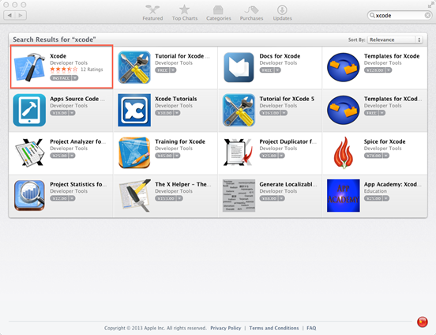
图2.1 搜索安装xcode
在搜索结果中，找到xcode，点击下方的install（或免费）按钮，紧接着输入app账号和密码，就可以自动完成下载和安装。
2.3 配置xcode的偏好设置
在xcode的菜单栏中，点击Xcode - Perference,打开xcode的偏好设置。
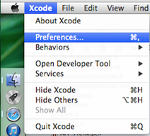
图2.2 打开偏好设置
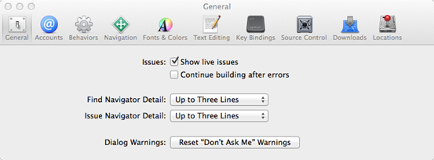
图2.3 偏好设置
点选Fonts & Colors可以设置Xcode编写时的背景和代码字体、颜色。可以选择Source Editor (源代码编辑)和Console(控制台)，要改变字体样式和大小就再匡中command＋a全选，然后点右下角的T图标。
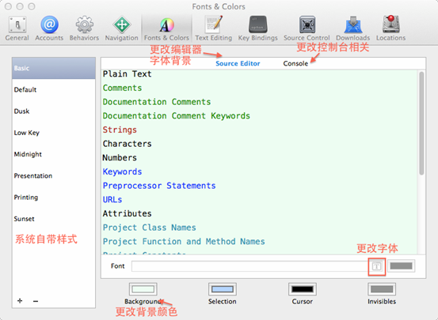
图2.4 设置字体背景
点选Key Bingdings可设置快捷键。
点选Downloads可以下载离线文和模拟器文件。
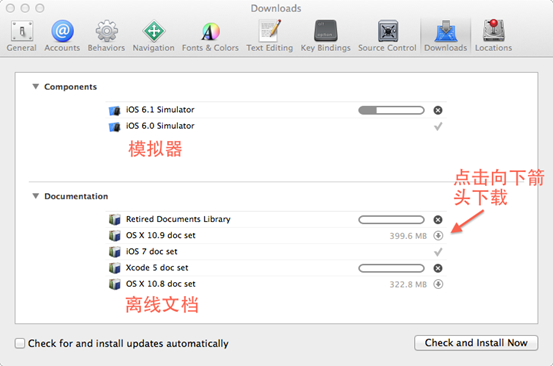
图2.5 下载模拟器和离线文档
Xcode默认将所有项目、workspace的build,index,snapshots,archives等都放在了一个特定的目录，默认为~/Library/Developer/Xcode/DerivedData/
如果想让build目录放到项目目录下面的话，就在这里设置打开Locations选项卡，更改Derived Data 后面的选项为Relative,其他选项不变。
更改后生成的app文件路径是：~/工程目录/DerivedData/工程名/build/Products/
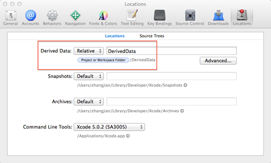
图2.6 更改build路径
3 xcode真机调试
使用xcode在真机上调试在前期还是比较繁琐的。你需要有一个付费的开发者账号，然后在开发者网站上注册你的设备，认证开发证书，生成配置文件等。
3.1 添加真机设备
如果你想在你的设备上运行程序的话，那么你必须在苹果的开发网址上注册一个开发者账号，并把你的设备注册到上面。
在浏览器中打开下面的网址:
https://developer.apple.com/ios/manage/devices/index.action
进入到Certificates,Identifiers&Profiles，然后单击iOS Apps下的Devices来添加真机设备。
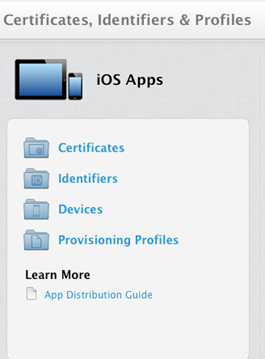
图3.1 Certificates,Identifiers&Profiles
点击右上角的"+"按钮，
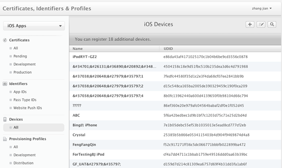
图3.2 iOS设备
在这里你可以添加一个或多个设备。
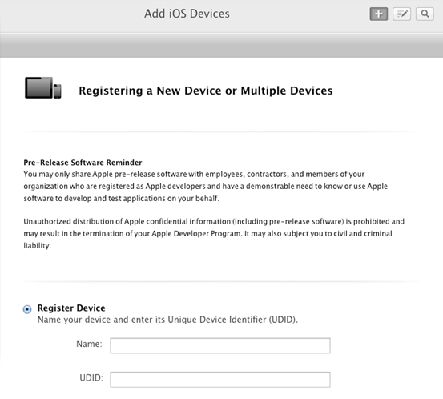
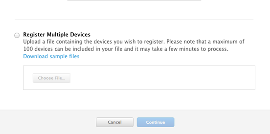
图3.3 注册设备
添加设备是需要知道设备的UDID，下面介绍如何获得设备的UDID：
方法一：使用iTunes
这种方法可以在安装iTunes的Mac和PC上使用
将iPhone（iTouch、iPad）用数据线和PC（Mac）连接到一起。
打开iTunes软件。（下载地址：www.apple.com.cn/itunes）
在iTunes的左侧选中您的设备。如下图：
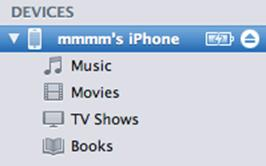
图3.4 选择设备在右侧你会看到链接设备的具体信息。如下图：
图3.5 设备详细信息1
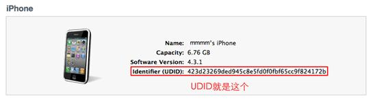
图3.6 设备详细信息2
方法二：使用xcode
这种方法只能在安装xcode的Mac上使用，如果你的Mac没有安装xcode，可以使用方法一获得设备的UDID。
- 将iPhone（iTouch、iPad）用数据线和Mac连接到一起。
- 这时候会自动打开Organizer（如果不自动打开，可以在xcode的菜单栏"window"下打开"Organizer"）。
- 选择Devices，在左侧找到你的设备，右侧的详细页面中的Identifier就是你要找的UDID。
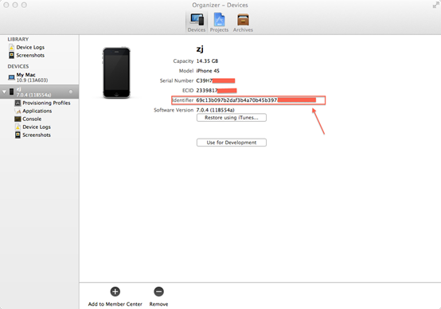
图3.7 Organizer
下面继续介绍如何在苹果开发者网址上注册你的设备。
在Add iOS Device页面（图3.3）中，如果要添加一个设备，选择Register Device选项，在name输入框中输入你喜欢的设备名称，然后在UDID输入框中输入上述获取的设备号；如果要添加多个设备，可以选择Register Multiple Devices选项，（你可以单击"Download sample files"下载例子文件，编辑其中的"multiple-device-upload-ios.txt"文件，或者自己创建一个txt文档，文档内容格式和下面的例子相同即可），单击"Choose File..."按钮上传设备文件，设备文件内容如下：
Device IDDevice Name
A123456789012345678901234567890123456789NAME1
B123456789012345678901234567890123456789NAME2
注意一个账号每年最多只能注册100个设备。填写完成后，单击"Continue"按钮继续操作。
在确认页面，单击"Register"按钮，完成设备的添加。
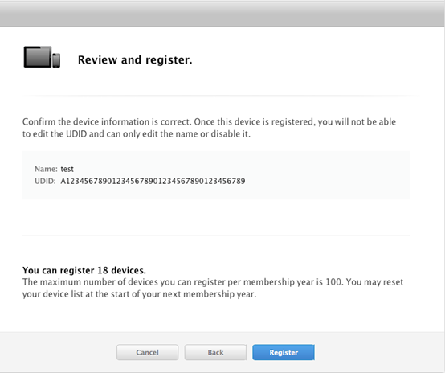
图3.8 确认页面
3.2 用Keychain Access（钥匙串访问）生成证书
打开KeychainAccess程序。依次选择"钥匙串访问-证书助理-从证书颁发机构请求证书…"，如下图
图3.8 证书助理
在证书助理页面，填写电子邮箱地址，并在下面选择"存储到磁盘"，单击"继续"按钮。
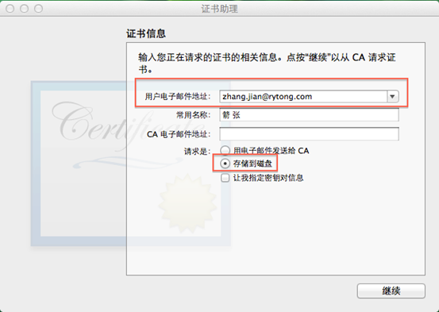
图3.9 填写证书相关信息
在弹出的视图中，选择证书存储的名称和路径，一般默认即可，单击"存储"按钮，保存证书到本地。
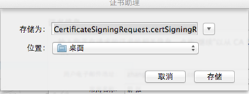
图3.10 保存证书
3.3 提交证书请求
单击左侧的Certificates，在"iOS Certificates"页面中，单击右上角的"+"按钮。
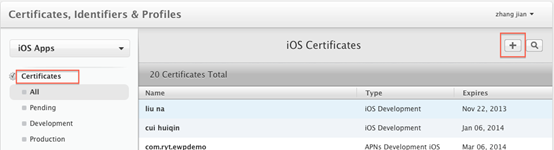
图3.11 添加证书
我们要在自己的设备上运行，所以选择"Development"下的"iOS App Development"，单击"Continue"按钮。如果要发布，择选择Production下的App Store and Ad Hoc选项。
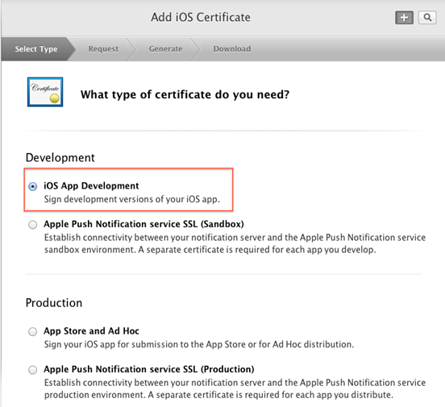
图3.12 选择证书类型
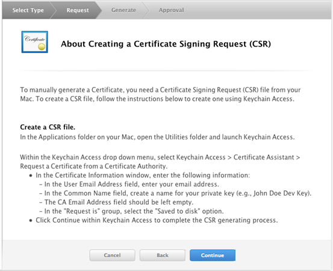
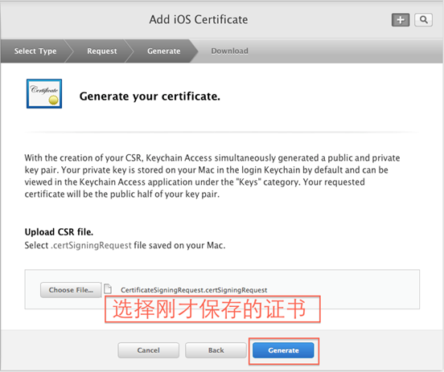
下载安装认证后的证书。
3.4 生成配置文件
Provisioning pfofiles（配置文件）是用来告知Xcode用哪个证书/私钥组合来签署程序。开发设备也通过它来决定如何认证安装在设备上的程序。其中包含了加入的真机设备的UDID（Provisioning pfofiles是建立在Certificates基础上的）。Provisioning pfofiles只能使用固定的Certificates文件（.p12文件）
单击左侧的Provisioning Profiles，打开配置文件页面。
单击右上角的"＋"按钮，生成一个新的配置文件。
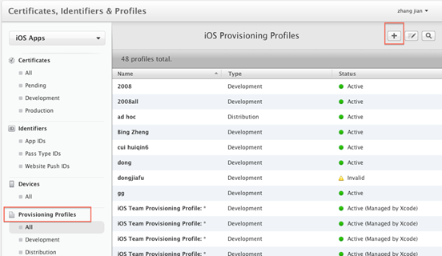
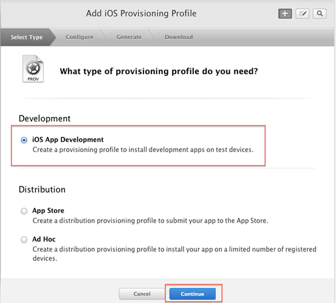
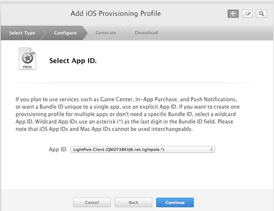
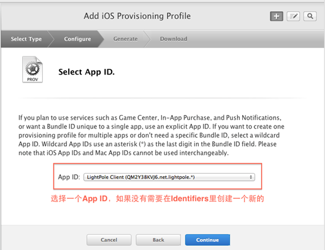
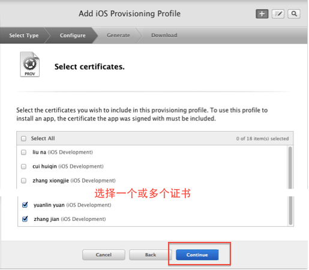
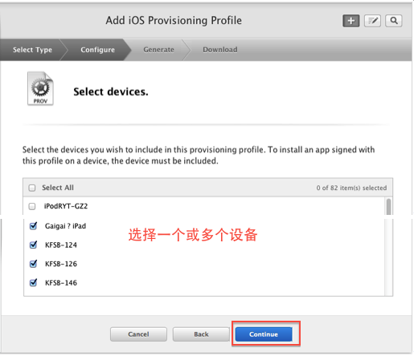
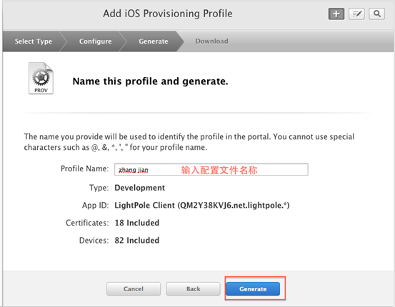